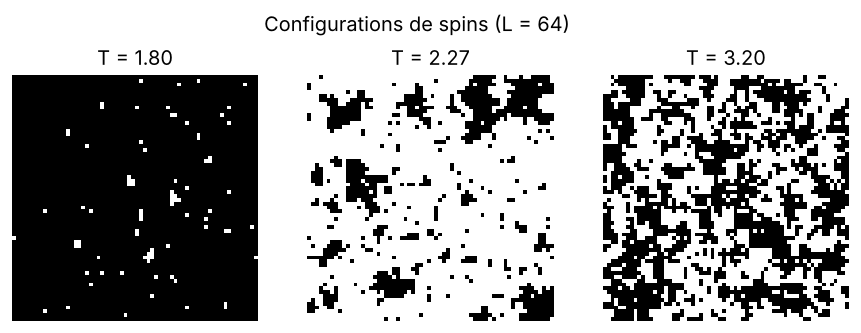

PHYSIQUE STATISTIQUE
Modèle d'Ising 2D par Monte-Carlo
Algorithme de Metropolis vectorisé, balayage en température et analyse de taille finie pour retrouver la température critique d'un aimant.
T_c = 2,249 · exact 2,269 (Onsager)
Voir le projet →
